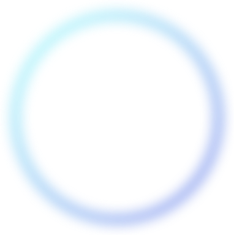
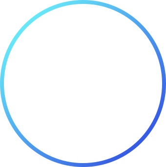
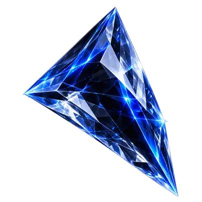
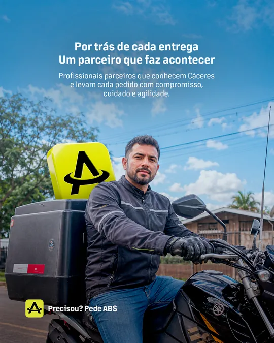
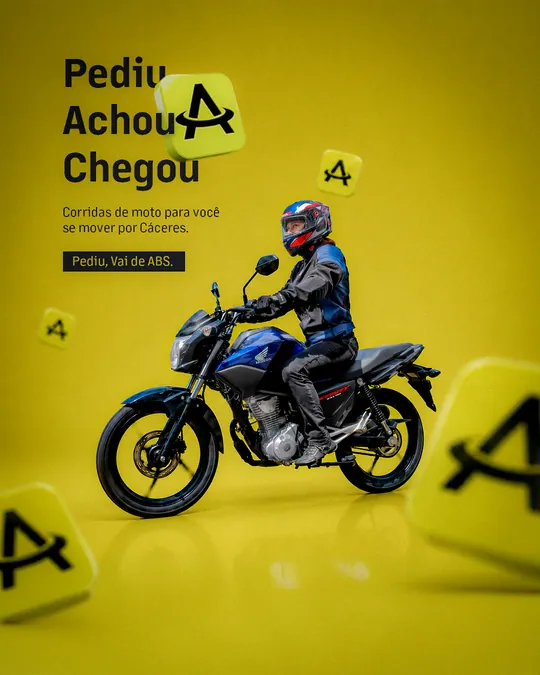
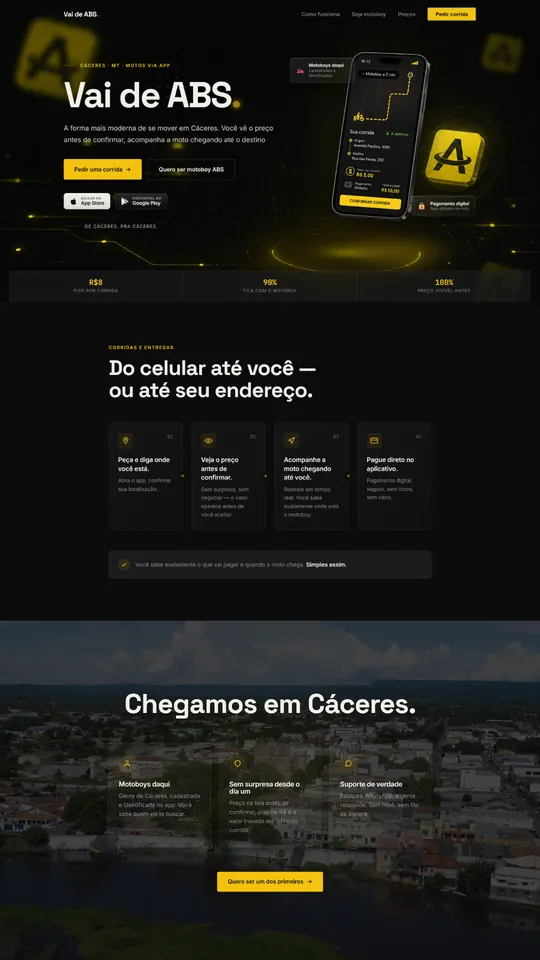
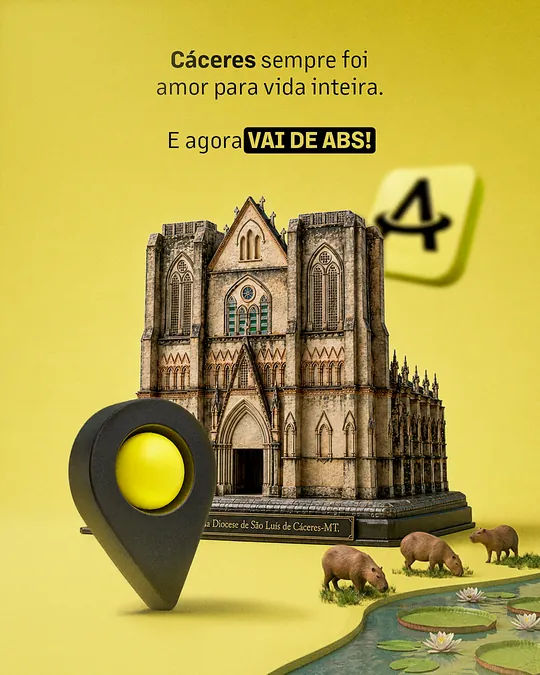
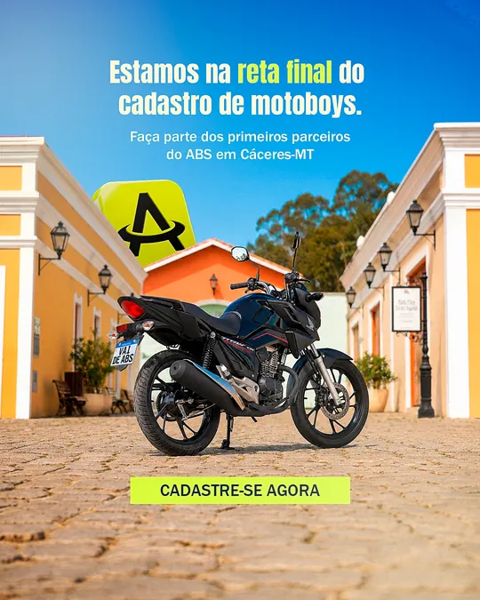

Juniior Santana
UX Design - CMO da Major
Há mais de 10 anos no universo do digital, ajudando empresários a crescer por meio de estratégias, tecnologia e soluções criativas.
SOLICITAR ORÇAMENTO Estruturação Comercial, Site, Identidade Visual...
Conheça os meus projetos




